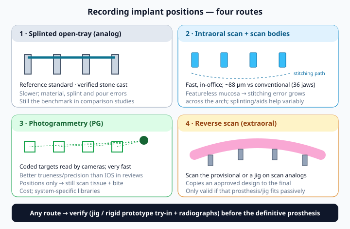

1 Learning objectives
By the end of Week 5 you should be able to:
- Choose an analog, hybrid or fully digital route for a full-arch case and say what each costs you in accuracy, chair time and risk.
- List the records needed to plan from the teeth and merge every file into one coordinate system.
- Compare splinted open-tray, intraoral scanning, photogrammetry and reverse scanning for recording implant positions, using what the evidence actually shows.
- Run a same-day printed or milled provisional and know when to fall back to the Week 4 direct pickup.
- Write a complete lab prescription and verify implant positions before the definitive prosthesis.
- Match the definitive material (monolithic zirconia, metal-resin, metal-zirconia) to the patient, and plan the provisional-to-final timeline.
2 Analog, hybrid or fully digital
"Digital" is not one thing. Most full-arch teams today run a hybrid workflow: digital planning and guides, a digitally designed provisional, and analog checks (a bite index, a verification jig, radiographs) at the points where an error would be expensive.
| Route | Strength | Weak point |
|---|---|---|
| Analog (impression, stone cast, denture conversion) | Long track record; no hardware cost; your Week 4 skills | Slower; impression and pour errors; less reusable data |
| Hybrid | Digital plan and design with analog verification where it matters | Two systems to manage; files and models must agree |
| Fully digital | Speed; one coordinate system from CBCT to final; easy remakes | Full-arch evidence is still young and system-specific; errors hide inside files |
Keep the evidence in proportion. A 2017 systematic review of the complete digital workflow in fixed prosthodontics found only three randomized trials, all for single crowns, and no trials of multi-unit fixed prostheses (Joda 2017). The 2018 ITI consensus on digital technologies concluded that intraoral scanning results in edentulous cases depend on the protocol followed (Wismeijer 2018). Much of the full-arch photogrammetry and printing literature is from 2024–2026 and largely in vitro. Digital is ready to use; it is not yet ready to trust blindly.
3 Digital workflow at a glance
![Four-phase digital full-arch workflow: A records (CBCT, scans, photos, bite at approved vertical, digital tooth arrangement); B plan and manufacture (implants planned from the teeth, guides, pre-designed provisional); C surgery day (implants and MUAs, capture positions by intraoral scan or photogrammetry, tissue and bite scan, design and print or mill, bond cylinders, seat and verify); D after integration (scan the approved provisional, verify positions, definitive prosthesis). The Week 4 analog pickup is the backup at every step on surgery day.](../assets/digital-workflow.svg)
Read the figure top to bottom and notice where the errors come from. Phase A errors (a wrong vertical, a bad tooth arrangement) carry all the way to the final. Phase C errors (a scan that stitched badly, a print that warped) show up as a provisional that will not seat passively. Phase D is where you catch them before they become zirconia.
4 Records that make the workflow work
Planning from the teeth (Week 2) only works digitally if the software knows where the approved teeth are relative to the bone. That needs these records, taken at the planning visit:
| Record | Why | Tip |
|---|---|---|
| CBCT | Bone, nerves, sinus; the implant plan | Use cheek retractors or cotton rolls so lips don't drape onto the teeth; a radiographic guide or scanned denture helps when there are few teeth to merge on |
| Arch / denture scans | Surface data to merge with the CBCT; the tooth position | Scan the existing teeth or denture and the denture outside the mouth if you will copy it |
| Bite at the approved vertical | Puts upper and lower in the right relationship | Same rule as Week 4: verify vertical at try-in, then record it |
| Photos | Smile line, lip support, midline, incisal display | Full smile, rest with lips relaxed, retracted, profile |
| Digital tooth arrangement | The prosthesis you are building toward | Get the patient's approval on a printed try-in before surgery when possible |
5 Four ways to record implant positions

| Route | What the evidence says |
|---|---|
| Splinted open-tray impression | The reference most studies measure against. In one study of CAD-CAM verification devices, open-tray impressions with milled devices had 0% misfit, better than the digital groups (Asavanant 2025, in vitro). |
| Intraoral scan + scan bodies | In 36 edentulous jaws, digital scans deviated a mean 88 ± 24 µm from verified conventional casts, judged clinically acceptable (Papaspyridakos 2023). Accuracy depends heavily on technique (Wismeijer 2018). |
| Photogrammetry | Two systematic reviews found better trueness and precision than intraoral scanning (Pozzi 2025; Altalla 2026). Pozzi still recommends a rigid prototype try-in until more clinical trials are in. |
| Reverse scan | Scanning the interim prosthesis or a verification jig on scan analogs outside the mouth; not recommended when the interim does not fit passively (Rosmaninho 2024 technique report). |
A useful working threshold: a 2026 American Academy of Fixed Prosthodontics review used scan discrepancy under about 150 µm as clinically acceptable, and most calibrated techniques fell within it (Revilla-León 2026). Pozzi 2025 framed angular error above about 1° as threatening passive fit. Neither number is a fit test; they explain why you still verify.
6 Intraoral scanning a full arch
An intraoral scanner builds the arch by stitching many small images. Teeth give it edges to lock onto; a healing edentulous ridge with sutures, blood and moving mucosa does not. Error can accumulate from one end of the arch to the other, and that cross-arch error is exactly what a one-piece prosthesis feels.
- Right scan bodies. Use the scan body that matches your MUA platform and the library your lab or software uses. Seat fully and tighten per IFU; radiograph if seating is in doubt.
- Dry, retracted field. Gauze, retraction and suction; blood and saliva cause stitching artifacts.
- A steady path. Follow the scanner maker's full-arch strategy. Don't jump across the arch mid-scan.
- Scan aids if your system supports them. Splinting scan bodies or adding geometry between them is one approach; results vary by technique and system, so use what your scanner maker and lab have validated (Wismeijer 2018).
- Separate scans for separate jobs. Scan bodies (positions), then tissue without scan bodies, then the opposing arch and the bite at the approved vertical. Label every file.
- Check before the patient leaves. Look for holes, doubled surfaces and scan bodies that look blurred or distorted. Rescan now, not after the lab calls.
7 Photogrammetry
Photogrammetry (PG) places coded targets on the abutments and calculates their positions from camera images, either with an extraoral camera or an intraoral device. Because it does not stitch surfaces across the arch, it avoids the main weakness of intraoral scanning.
- Accuracy. Pozzi 2025 reviewed 13 studies (3 in vivo): PG was more accurate than IOS in 10. Altalla 2026 pooled 14 studies and found PG better for distance and angular deviation, for both trueness and precision. For intraoral PG specifically, Revilla-León 2026 pooled a mean linear discrepancy of 36 µm and angular 0.23°, with significant publication bias.
- It records positions only. You still need a tissue scan, the opposing arch and the bite, merged to the PG file.
- Speed on surgery day. In a prospective study of 19 patients and 24 arches, navigation photogrammetry took about 10 seconds for four implants and 28 seconds for six; all 3D-printed screw-retained provisionals were judged passive, with moderate occlusal adjustment and no complications at 6 months (Pozzi 2026). That is one group, one system, short follow-up.
- Cost and lock-in. PG systems are a capital purchase, and target and library compatibility are system-specific. For a first-case office it is usually worth asking whether your lab or a partner office already has one.
8 Same-day printed or milled provisional
The digital version of the Week 4 conversion: instead of hollowing a denture, you design a provisional from the approved tooth arrangement, capture implant positions after the MUAs are seated, and either (a) print or mill a prosthesis that fits those positions, or (b) use a pre-made shell and pick up cylinders into it chairside.
| Approach | Use when | Watch for |
|---|---|---|
| Pre-printed shell + chairside pickup | Planned positions are reliable (guided); you want speed without a same-day design step | Same pickup rules as Week 4: passive, at the bite-index vertical, isolated |
| Scan or PG after placement → design → print | In-office or nearby lab can turn a design in hours | Chair and sedation time while you wait; print orientation and post-cure |
| Milled PMMA | Lab can deliver same or next day; higher-risk patient | Logistics; cost |
Milled versus printed matters. In a randomized crossover clinical study of complete-arch implant-supported interim restorations, milled PMMA had fewer mechanical complications than 3D-printed resin (10% vs 45%), with no difference in passive fit over three months (Vasquez-Ramos 2026). Week 4's fracture data still apply: plan for repairs either way.
9 Printing in the office: what actually matters
- Validated printer + resin + post-cure. Material properties depend on the whole chain. Tahayeri 2018 showed a printed provisional resin can reach usable mechanical properties, but printing settings changed accuracy (up to 22% dimensional error in that study). Use a combination the resin maker validates, and follow the IFU for washing and curing.
- Build angle and connectors. For complete-arch interim prostheses, 0° with no intra-arch bar was most accurate in one in vitro study; 45° and 90° builds with that printer and resin could not be recommended, with some marginal gaps beyond clinical acceptability (Sonderegger 2026).
- Thickness where it counts. Same as Week 4: bulk around cylinders and connectors, short cantilevers, no thin flanges.
- In-office vs lab. Printing in-house buys speed and control; outsourcing buys a technician's experience. For your first cases, a lab that prints or mills same day, with you doing the surgery and seating, is the lower-risk start.
10 Lab communication
![Lab prescription checklist in three columns. Files: implant positions with system and scan body named, tissue scan, opposing arch, bite at approved vertical, pre-op or provisional scan, CBCT and plan, clear file names. Photos: full smile, rest, retracted, profile, denture or provisional in place, shade tab, midline and plane. Instructions: implant system and MUA platform and screw, what is being made and in which material, mould and shade and pink, occlusal scheme and cantilever limit, convex cleansable intaglio, changes from the provisional, due date and contact.](../assets/lab-rx.svg)
The most common lab problems on full-arch cases are not technical; they are missing information. Write cantilever limits in millimeters, name the occlusal scheme (Week 4: even, bilateral, light centric, cantilevers light or out, shallow guidance), and say what the patient wants changed from the provisional. Call the technician on your first few cases; ten minutes on the phone saves a remake.
11 Verification before the final
Passive fit has no single test. Kan 1999 reviewed the clinical methods (direct vision and tactile checks, radiographs, the one-screw test, the screw-resistance test and others) and concluded none is objective on its own, so use them in combination.
- Verification jig (a rigid splint of temporary cylinders) on the MUAs: one screw at a time, watch for lift at the far side, radiograph.
- Rigid prototype try-in: a printed or milled copy of the final, tried in for fit, esthetics, phonetics and occlusion. Pozzi 2025 recommends it for digital impressions until more trials are in.
- Milled beats printed for verification devices: printed devices had higher misfit rates in Asavanant 2025, limiting their use for verifying complete-arch implant positions.
- If it doesn't fit: section and re-luting the jig, or re-capturing positions, is cheap. Remaking a zirconia arch is not.
Framework fabrication method also matters: CAD/CAM frameworks were the most consistent and least technique-sensitive route to excellent fit in Abduo 2011's systematic review.
12 Choosing the definitive prosthesis
| Option | Evidence snapshot | Think of it for |
|---|---|---|
| Monolithic zirconia (gingival stain or gingival-only veneer) | Zirconia fixed complete dentures: 1.4% short-term failure; most complications (14.7%) were chipping of veneering porcelain; monolithic or gingival-only veneering looked promising (Bidra 2017) | Strength and wear resistance; patients who want minimal maintenance |
| Metal-acrylic (hybrid) | Repairable, kinder to opposing teeth, but tooth wear and fracture of denture teeth are common long-term complications (Week 4: Purcell 2008; Bozini 2011) | Limited budget; when you want easy repairs |
| Metal-zirconia | Versus metal-acrylic: less prosthetic wear and lower peri-implantitis risk, similar implant survival and framework fracture; mostly non-randomized studies (Marinkovic 2026) | Bruxers or long-span cases where you want a metal framework under zirconia |
Whatever the material, copy the provisional that worked: the vertical, tooth positions, cleansable convex intaglio and cantilever lengths have been tested in the patient's mouth for months. The final is a stronger copy, not a new design.
13 Provisional to final: the timeline
| When | What |
|---|---|
| Surgery day | Same-day provisional (digital or Week 4 pickup). Save every file. |
| ~1–4 weeks | Occlusion and tissue checks; start the patient's wish-list for the final |
| ~8–12+ weeks | Assess integration; remove provisional, check MUAs; capture final positions (scan, PG or impression); scan the approved provisional (reverse scan) |
| Next visit | Verification jig and/or rigid prototype try-in; approve esthetics, phonetics, occlusion |
| Delivery | Seat, radiograph every interface, torque per IFU, occlusion, seal channels, hygiene instructions (Week 6) |
The integration window is a teaching range; your implant system, bone quality and the patient's healing decide the date.
14 Building your first-case workflow
For your first in-office cases, a sensible order is:
- Cases 1–3: hybrid, conservative. Digital planning and guides; Week 4 analog conversion on surgery day; a full-arch lab does the final from a conventional or verified digital impression.
- Add the scanner. Use your intraoral scanner for records and the bite, and scan bodies for final positions, always with a verification jig.
- Then same-day digital provisionals once the lab and you have a repeatable hand-off and turnaround.
- Photogrammetry and in-house printing when your case volume justifies the hardware and staff training.
15 Digital workflow vignettes
GO = proceed as planned · CAUTION = fix something first · NO = don't proceed today.
Case A — Maxilla, final impression visit, 64M
- Provisional has worked well for 12 weeks; MUAs stable
- Intraoral scan with scan bodies taken; the screen shows a doubled surface on the far-left scan body
- Plan was to send the scan straight to the lab for a monolithic zirconia final, no jig or try-in
Case B — Mandible, surgery day, 59F, same-day printed provisional
- Four implants loaded at threshold; photogrammetry, tissue scan and bite at the approved vertical captured
- Provisional printed flat (0°) with a validated resin, post-cured per IFU; seats passively, radiographs show no gaps
- Verified denture, duplicate and bite index in the room as backup
Case C — Maxilla, surgery day, 72M under IV sedation
- Intraoral scan keeps failing to stitch across the arch (bleeding, mobile tissue); 40 minutes spent rescanning
- The in-office printer job then fails; reprint needs about 90 more minutes
- Sedation provider is concerned about time; verified denture and bite index are available
References (verified sources)
- Joda T, Zarone F, Ferrari M. The complete digital workflow in fixed prosthodontics: a systematic review. BMC Oral Health. 2017;17(1):124. doi:10.1186/s12903-017-0415-0
- Wismeijer D, Joda T, Flügge T, et al. Group 5 ITI Consensus Report: Digital technologies. Clin Oral Implants Res. 2018;29 Suppl 16:436-442. doi:10.1111/clr.13309
- Papaspyridakos P, De Souza A, Finkelman M, Sicilia E, Gotsis S, Chen YW, Vazouras K, Chochlidakis K. Digital vs conventional full-arch implant impressions: a retrospective analysis of 36 edentulous jaws. J Prosthodont. 2023;32(4):325-330. doi:10.1111/jopr.13536
- Pozzi A, Arcuri L, Carosi P, Laureti A, Londono J, Wang HL. Photogrammetry versus intraoral scanning in complete-arch digital implant impression: a systematic review and meta-analysis. Clin Implant Dent Relat Res. 2025;27(3):e70059. doi:10.1111/cid.70059
- Altalla H, Alhelou H, Karaduman F, Alawawda O, Bayindir F. Comparative accuracy of photogrammetry and intraoral scanners in recordings for complete arch implant-supported prostheses: a systematic review and meta-analysis. J Prosthet Dent. 2026;135(5):e60-e70. doi:10.1016/j.prosdent.2025.10.059
- Revilla-León M, Ghunaim D, Barmak AB, Afshari FS, Fang Q, Prasad S. Accuracy of complete arch implant scans recorded by using calibrated scanning techniques: a systematic review and meta-analysis. J Prosthet Dent. 2026;135(4):e28-e42. doi:10.1016/j.prosdent.2025.11.029
- Pozzi A, Laureti A, Arcuri L, Ansong R, Londono J, Chow J. AI-powered intraoperative navigation photogrammetry for complete-arch implant impression and immediate loading with a 3D-printed temporary prosthesis: a prospective clinical study. J Esthet Restor Dent. 2026;38(7):1265-1275. doi:10.1111/jerd.70131
- Rosmaninho A, Vedovato E, Kois JC, Revilla-León M. Altered reverse impression method involving extraoral digitalization of a verification jig for the fabrication of implant-supported prosthesis by using a complete-digital workflow. J Esthet Restor Dent. 2024;36(4):566-572. doi:10.1111/jerd.13157
- Vasquez-Ramos S, Cascos R, Ballesteros-Martínez J, Revilla-León M, Gómez-Polo M. Randomized comparative crossover clinical study of mechanical and optical behavior, and oral health-related quality of life of CAD-CAM milled and 3D-printed complete-arch implant-supported interim restorations. J Prosthodont. 2026;35(7):1021-1030. doi:10.1111/jopr.70186
- Tahayeri A, Morgan M, Fugolin AP, et al. 3D printed versus conventionally cured provisional crown and bridge dental materials. Dent Mater. 2018;34(2):192-200. doi:10.1016/j.dental.2017.10.003
- Sonderegger S, Mourelle PM, Aeschbacher M, Yilmaz B, Galvao CS, Çakmak G. The effect of build angle and intraarch connector design on the accuracy and fit of additively manufactured complete-arch implant-supported interim fixed prostheses. J Dent. 2026;176:107004. doi:10.1016/j.jdent.2026.107004
- Kan JY, Rungcharassaeng K, Bohsali K, Goodacre CJ, Lang BR. Clinical methods for evaluating implant framework fit. J Prosthet Dent. 1999;81(1):7-13. doi:10.1016/s0022-3913(99)70229-5
- Asavanant N, Yang CC, AlQallaf H, Zandinejad A, Morton D, Nagai T, Lin WS. Effects of complete-arch digital scanning techniques on the passive fit of CAD-CAM verification devices. J Prosthodont. 2025;34(7):741-748. doi:10.1111/jopr.14084
- Abduo J, Lyons K, Bennani V, Waddell N, Swain M. Fit of screw-retained fixed implant frameworks fabricated by different methods: a systematic review. Int J Prosthodont. 2011;24(3):207-220. PubMed 21519567
- Bidra AS, Rungruanganunt P, Gauthier M. Clinical outcomes of full arch fixed implant-supported zirconia prostheses: a systematic review. Eur J Oral Implantol. 2017;10 Suppl 1:35-45. PubMed 28944367
- Marinkovic D, Gutiérrez R, Frey M, Collao F, Moreno Y, Miranda C. Prosthetic and biological complications of metal-zirconia versus metal-acrylic implant-supported screw-retained complete-arch prostheses: a systematic review and meta-analysis. J Clin Exp Dent. 2026;18(5):e704-e715. doi:10.4317/jced.63882
- Course context (general sources, not cited for specific numbers): Pikos Institute — Foundational Full Arch Therapy: All-on-XYZ / All-on-4 Level 2; SmartOnX.